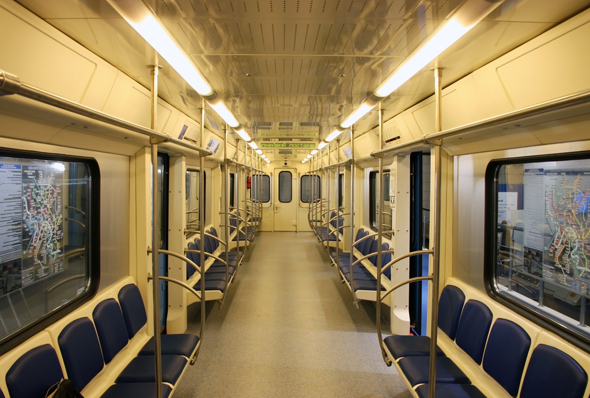
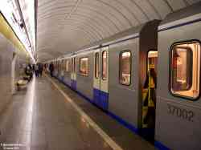

Опытная Ока — начало семейства
Опытная Ока была построена в 2010 году. Этот поезд стал родоначальником всего семейства вагонов 81-760/761 «Ока», которые впоследствии стали одними из самых массовых в Московском метро.
Внимание: Состав списан в октябре 2021 года. Часть вагонов утилизирована, часть ожидает утилизации, часть — доноры запчастей.
Общая информация
| Параметр | Значение |
|---|---|
| Город | Мытищи 🇷🇺 |
| Депо/Парк | АО «Метровагонмаш» |
| Модель | 81-760/761 «Ока» (опытная) |
| Построен | 04.2010 (головные), 11.2010 (промежуточные) |
| Текущее состояние | Списан |
| Назначение | Служебный |
| Списан | 10.2021 |
Составность
37001 — 30001 — 30002 — 37002 + 30003 — 30004 — 30005 — 30006
8 вагонов
Особенности
- Опытный 81-760/761: отсутствуют форточки
- Окрас маски «75 лет Московскому метрополитену» (у 37001)
- С 03.2011: установлены светодиодные фары (у 37001)
- Двери: белый верх / синий низ
- Сварной шов: внешний
История и события
Поступил в метрополитен
Состав поступил в Московский метрополитен на испытания.
Первая обкатка на линии
Обкатка по маршруту ТЧ-8 «Варшавское» — «Серпуховская» — ТЧ-8 «Варшавское».
Ночная обкатка на Бутовской линии
Проведена ночная обкатка на Бутовской линии.
Открытие станций «Достоевская» и «Марьина Роща»
Участвовал в пуске станций на Люблинско-Дмитровской линии.
Тормозные испытания
Проведены тормозные испытания на Бутовской линии.
Выставка «ЭкспоСитиТранс — 2010»
Презентация состава на международной выставке транспортных технологий.
Презентация для президента
Презентация состава для президента на заводе «Метровагонмаш».
Работа в ТЧ-12 «Новогиреево»
Использовался как тренажёр в депо ТЧ-12 «Новогиреево».
Состав по вагонам
Детальная информация по каждому вагону опытного состава:
Головной вагон 37001
| Параметр | Значение |
|---|---|
| Модель | 81-760 |
| Построен | 04.2010 |
| Поступил в метрополитен | 30.04.2010 |
| Списан | 10.2021 |
| Текущее состояние | Хранение в ТЧ-16 «Митино», ожидает утилизации |
| Особенности | Отсутствуют форточки; окрас «75 лет Мосметро»; с 03.2011 — светодиодные фары |
Промежуточный вагон 30001
| Параметр | Значение |
|---|---|
| Модель | 81-761 |
| Построен | 04.2010 |
| Поступил в метрополитен | 30.04.2010 |
| Списан | 10.2021 |
| Текущее состояние | ТЧ-8 «Варшавское» — донор запчастей |
| Особенности | Отсутствуют форточки; двери: белый верх / синий низ; сварной шов внешний |
Промежуточный вагон 30002
| Параметр | Значение |
|---|---|
| Модель | 81-761 |
| Построен | 11.2010 |
| Поступил в метрополитен | 06.12.2010 |
| Списан | 10.2021 |
| Текущее состояние | ТЧ-8 «Варшавское» — донор запчастей |
| Особенности | Отсутствуют форточки; двери: белый верх / синий низ; сварной шов внешний |
Промежуточный вагон 30003
| Параметр | Значение |
|---|---|
| Модель | 81-761 |
| Построен | 11.2010 |
| Поступил в метрополитен | 06.12.2010 |
| Списан | 10.2021 |
| Утилизирован | 12.2021 (в ТЧ-16 «Митино») |
| Особенности | Отсутствуют форточки; двери: белый верх / синий низ; сварной шов внешний |
Промежуточный вагон 30004
| Параметр | Значение |
|---|---|
| Модель | 81-761 |
| Построен | 11.2010 |
| Поступил в метрополитен | 06.12.2010 |
| Списан | 10.2021 |
| Текущее состояние | Хранение в ТЧ-16 «Митино», ожидает утилизации |
| Особенности | Отсутствуют форточки; двери: белый верх / синий низ; сварной шов внешний |
Промежуточный вагон 30005
| Параметр | Значение |
|---|---|
| Модель | 81-761 |
| Построен | 11.2010 |
| Поступил в метрополитен | 06.12.2010 |
| Списан | 10.2021 |
| Утилизирован | 05.2022 (в ТЧ-16 «Митино») |
| Особенности | Отсутствуют форточки; двери: белый верх / синий низ; сварной шов внешний |
Промежуточный вагон 30006
| Параметр | Значение |
|---|---|
| Модель | 81-761 |
| Построен | 11.2010 |
| Поступил в метрополитен | 06.12.2010 |
| Списан | 10.2021 |
| Текущее состояние | Хранение в ТЧ-16 «Митино», ожидает утилизации |
| Особенности | Отсутствуют форточки; двери: белый верх / синий низ; сварной шов внешний |
Судьба вагонов
| № вагона | Модель | Построен | Списан | Судьба |
|---|---|---|---|---|
| 37001 | 81-760 | 04.2010 | 10.2021 | ТЧ-16 «Митино» — ожидает утилизации |
| 30001 | 81-761 | 04.2010 | 10.2021 | ТЧ-8 «Варшавское» — донор запчастей |
| 30002 | 81-761 | 11.2010 | 10.2021 | ТЧ-8 «Варшавское» — донор запчастей |
| 30003 | 81-761 | 11.2010 | 10.2021 | Утилизирован (12.2021) |
| 30004 | 81-761 | 11.2010 | 10.2021 | ТЧ-16 «Митино» — ожидает утилизации |
| 30005 | 81-761 | 11.2010 | 10.2021 | Утилизирован (05.2022) |
| 30006 | 81-761 | 11.2010 | 10.2021 | ТЧ-16 «Митино» — ожидает утилизации |
Текущее состояние: 37001, 30004, 30006 в ТЧ-16 «Митино» ожидают утилизации. 30001 и 30002 — доноры запчастей в ТЧ-8 «Варшавское». Остальные утилизированы в 2021–2022 годах.
Фотогалерея

📸 неизвестен

📸 Шпекавыг

📸 Mr.Den

📸 Дмитрий Белов
Нажмите на фото для увеличения
Технические характеристики
| Параметр | Значение |
|---|---|
| Год постройки | 2010 (04.2010 — головные, 11.2010 — промежуточные) |
| Завод-изготовитель | Мытищинский машиностроительный завод (ММЗ) |
| Модель | 81-760/761 «Ока» (опытная) |
| Составность | 37001 — 30001 — 30002 — 37002 + 30003–30006 |
| Количество вагонов | 8 |
| Участие в событиях | Открытие «Достоевской» и «Марьиной Рощи» (19.06.2010) |
| Выставки | «ЭкспоСитиТранс — 2010» (06–08.09.2010) |
| Презентация | 23.03.2011 для президента на заводе «Метровагонмаш» |
| Списан | 10.2021 |
| Утилизация | 30003 — 12.2021, 30005 — 05.2022 |
| Сохранились | 37001, 30004, 30006 (ТЧ-16), 30001, 30002 (ТЧ-8, доноры) |
«Опытная Ока открыла эру вагонов нового поколения в Московском метро. Именно с неё началось массовое обновление подвижного состава, которое продолжается до сих пор. Сохранить хотя бы один головной вагон — наш долг перед историей».